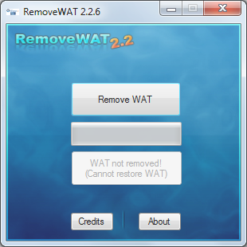

| Pidkey | Скачать | Откючайть антивырус | Программа проверки ключей Windows на валидность, умеет сохранять и восстанавливать активацию и менять ключ. |
| winoffact 2.0 | Скачать | Откючайть антивырус | Сборник активаторов |
| All activation Windows (7-8-10) v19.6 2018 | Скачать | Откючайть антивырус | Сборник активаторов |
| Microsoft.Office.2019x86.v2018.10 | Скачать | Редактор текста | |
| RemoveWat |  | Windows 7 | |
| KMSpico | Скачать | Отключайть антивырус | Windows 8, 8.1 |
| скачать обновление до windows 10 | |||